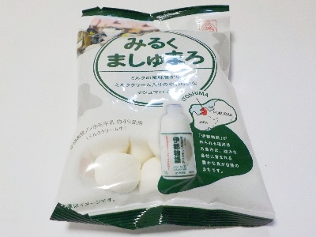

ミルククリームが入ってより甘い伊都物語みるくましゅまろ
更新日 : 2026/01/05

マシュマロの甘さがより強くなるのはいいですね。美味しかったです。
甘いですがマシュマロはふわふわでお腹にたまらないので、一気に一袋食べてしまいました。
安売りだったので税込み104円で購入しました。
佐賀県小城市小城町池上2500
更新日 : 2026/01/05

マシュマロの甘さがより強くなるのはいいですね。美味しかったです。
甘いですがマシュマロはふわふわでお腹にたまらないので、一気に一袋食べてしまいました。
安売りだったので税込み104円で購入しました。